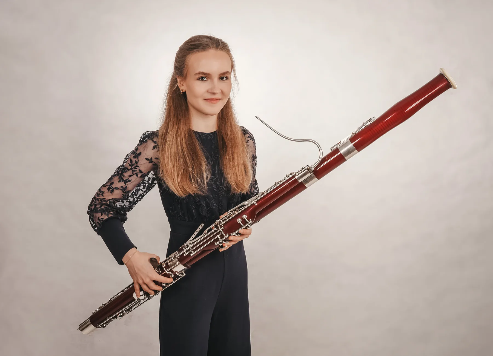
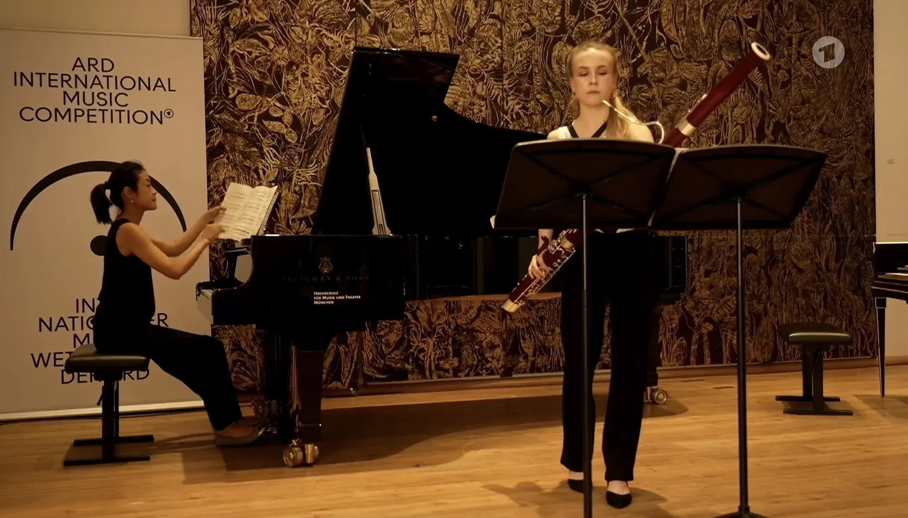

Klavier &
Fagott
Cosima studiert beide Instrumente an der Hochschule für Musik und Theater München: Klavier bei Markus Bellheim, Fagott bei Dag Jensen.
Solistische Auftritte und Kammermusik gehören zu ihrem musikalischen Weg.

Wien, 2026
2. Preis beim 3. Internationalen Wiener Klavierwettbewerb „Wiener Klassik“ in Kategorie 4. Mit 88,8 Punkten erreichte Cosima die höchste Wertung der Kategorie; ein 1. Preis wurde nicht vergeben.
Offizielle Ergebnisliste (PDF öffnet in neuem Tab)Auf der Bühne
2026 erreichte Cosima beim Internationalen Musikwettbewerb der ARD die zweite Runde im Fach Fagott.
Zum Wettbewerb (öffnet in neuem Tab)
Auswahl
- Wiener Klassik
2. Preis Klavier, Kategorie 4; 88,8 Punkte, kein 1. Preis vergeben.
- ARD-Musikwettbewerb
Zweite Runde, Fagott.
- Studienstiftung
Aufnahme als Stipendiatin der Studienstiftung des deutschen Volkes.
- Jugend musiziert
Erste Bundespreise für Klavier solo und Kammermusik.
- Jugend musiziert
Erster Bundespreis im Fach Fagott solo.
Biografische Quellen: Bayerische Staatsoper, Live Music Now München, HMTM.